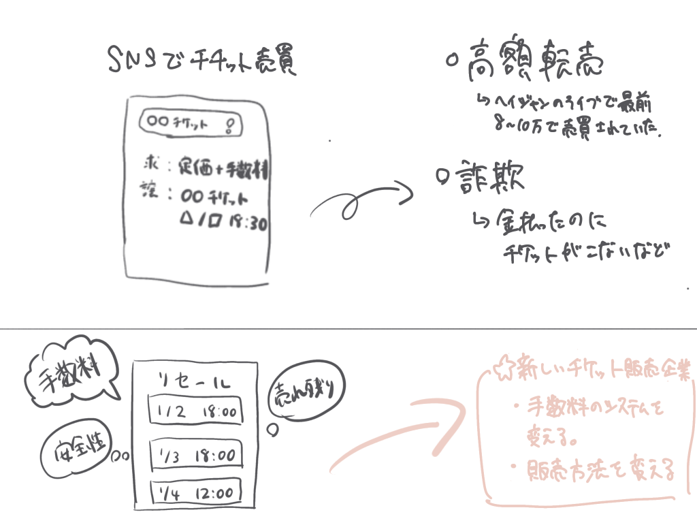
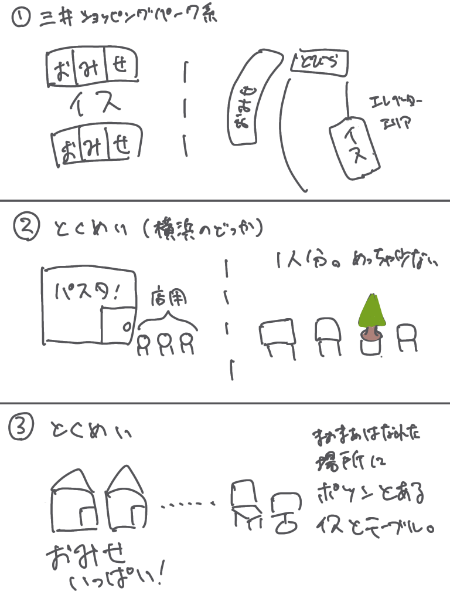

本来公式サイトで行われるはずのチケット売買がSNSにされています。
高額販売や、チケットに詐欺にあっている人もいます。
一応公式でリセールもあるのですが、手数料取られるし、売れ残るし、と利用する人が少ない！
そこでもうチケット販売とリセールをおなじ企業でやった方が良いのではないかと考えました！
手数料も少額で済むので消費者もうれしい。運営側も安心してチケット販売できるのではと考えます

夏休みの日。多くのショッピングモールに行ったのですが、ショッピングモールに椅子が少ない！
荷物多いし、座りたいのに椅子がない。
三井ショッピングモール系は至る所に椅子がありとても助かる。店と椅子の融合が素晴らしい。
横浜では椅子はあったものの一人分。一か所しかなかった。
一番↓の場所は店と離れたところに休憩スペースがあった。
今はバブル時代なのではないのだから、少子高齢化社会に適合したバリアフリーに特化したショッピングモールに改良したい